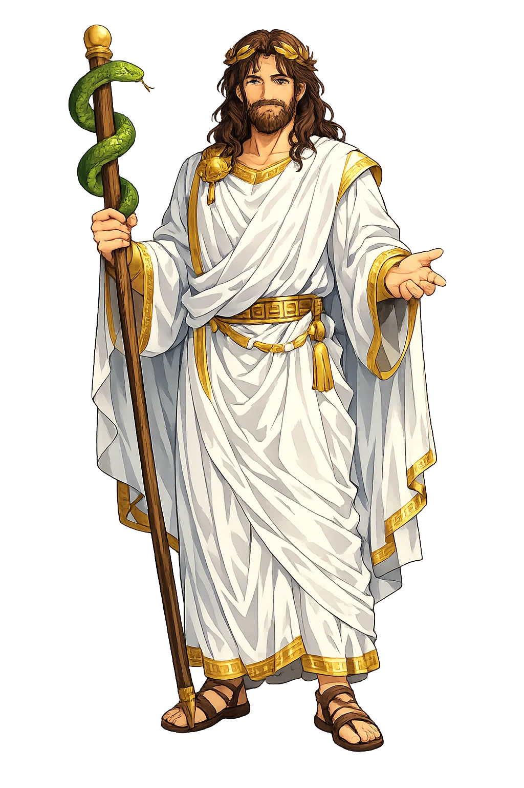
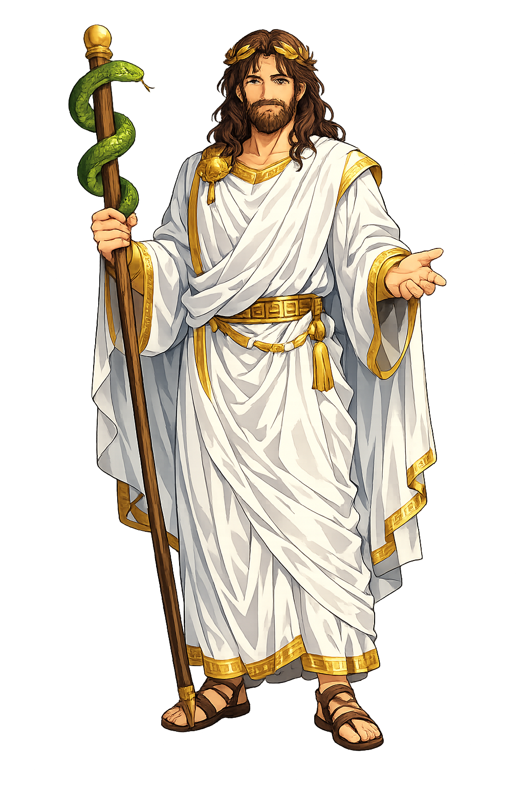

The Authentic Orthography
Medicine, Healing, Renewal · The Physician of the Gods

Unicode restoration and ASCII comparison
Ἀσκληπιός
The name in its original Greek form. Asklēpiós (Ἀσκληπιός) is attested in the source tradition — “Uncertain; possibly related to ἀσκαλαβώτης (lizard) or a pre-Greek healing root”. Its long vowels and acute accents carry the full phonetic and orthographic weight of the source tradition.
asklepios
Reduced to plain asklepios, the name loses everything that made it specific: long vowels and acute accents. What remains is an ASCII string that machines can parse but that no longer speaks with its original voice.
Asklēpiós
The Unicode restoration recovers what ASCII flattened. Asklēpiós restores long vowels and acute accents, returning the name to its original written dignity. The domain encodes to Punycode, but the browser displays the truth.
Asklēpiós.com → xn--asklpis-q0a9z.com
The non-ASCII characters in Asklēpiós are encoded while the ASCII remains visible. To the DNS, it is Punycode. To humanity, it is Asklēpiós.
How Asklēpiós is preserved in writing
A bespoke provenance study for Asklēpiós is being prepared by the PUNICODEX scholarly team.
Contribute scholarly provenance →How Asklēpiós was spoken
Medicine, Healing, Incubation, and the Boundary of Death
Asklēpiós is the only hero whose skill frightened the gods: the surgeon-son of Apóllōn who healed so well that Zeús destroyed him for emptying the underworld. His sanctuaries were the hospitals of the ancient world, and his snake-entwined staff still hangs over every pharmacy on earth.
A single serpent on a staff — the true emblem of medicine, distinct from Hermês' two-snaked caduceus.
The greatest healing sanctuary of antiquity, where patients slept among sacred snakes and dogs.
Temple sleep: the god visited dreams and prescribed the cure, recorded on the iamata tablets.
Zeús' answer to resurrection — the line past which even healing becomes transgression.
Stories of Asklēpiós
Born from catastrophe — cut from the womb of the dying Korōnis by his father Apóllōn — Asklēpiós was raised by the centaur Cheirōn, who taught him the pharmaka of roots and the surgery of the knife.
Apóllōn, having killed Korōnis for her infidelity, snatched the unborn child from her funeral fire and gave him to Cheirōn. The healing god thus begins between death and rescue: Pindar sings that the centaur taught him to cure "those suffering from nature's wounds."
Given the Gorgon's blood by Athēnā — one side destroying, one side saving — Asklēpiós raised the dead, Hippolytos among them in the Roman telling. Zeús struck him with the thunderbolt for disturbing the order of nature; Apóllōn avenged him by killing the Kyklōpes, and Zeús finally raised the physician among the stars.
At Epidaurus, Kos, and Pergamon, the sick purified themselves, slept in the abaton, and dreamed the god's prescription — or woke healed by the sacred snakes that roamed the dormitory. The inscribed iamata record real names and afflictions: the largest surviving archive of ancient patient testimony.
Plato records Sócrates' final sentence: "Krito, we owe a cock to Asklēpiós — pay it, do not forget." The dying philosopher thanked the healing god as if death itself were the cure for life — the god's strangest and most famous offering.
Asklēpiós is the god of the second opinion. He stands at the exact border between what may be cured and what must be accepted, and the thunderbolt that killed him marks medicine's eternal question: not whether we can, but whether we should. Every healer who has ever weighed risk against hope has stood inside his sanctuary.
Enter Extended Lore